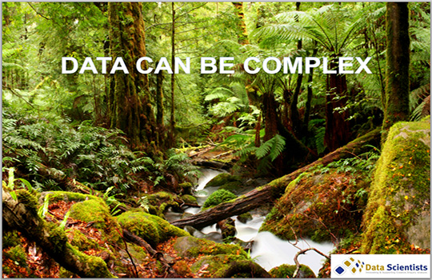
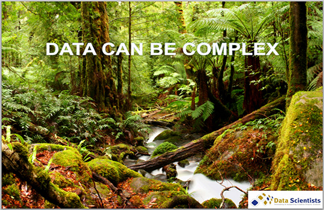
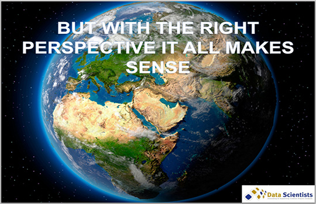
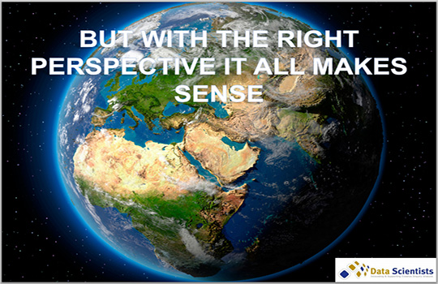

I worked
with Troy for several crucial years during the formation of the
initial Typefi Publishing System. Troy is quite an
extraordinary individual for several reasons: he brings an
incredible knowledge of data science and systems design to the
software development process; he is an exceptional systems
architect, able to rapidly iterate and respond to development
goals that, during early R&D have a habit of morphing far
quicker than most engineers can cope; he augments his
experience with a clear-sighted intuition that delivers a
thorough understanding of the benefits and limits of the
numerous solutions that can be applied to a particular problem
set; and he can communicate all of the above with clarity,
thoughtfulness and precision. Troy is also a superb team
leader, has a laser-sharp focus, and is also a delight with
which to work.
Stephen
O'Brien - Program Manager
Typefi
Systems Pty Ltd
 
  


 I had the
pleasure of working with Troy for six months in 2011. He
successfully delivered a key customer project for QFAB. Troy is
an authentic "Data Scientist". He engages the customer within
the project, brings technical knowledge and provides leadership
through implementation of efficient processes, genuine
compassion, empowerment and strong commitment.
I had the
pleasure of working with Troy for six months in 2011. He
successfully delivered a key customer project for QFAB. Troy is
an authentic "Data Scientist". He engages the customer within
the project, brings technical knowledge and provides leadership
through implementation of efficient processes, genuine
compassion, empowerment and strong commitment.